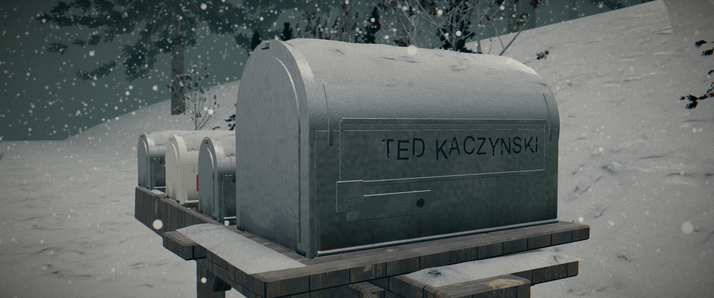
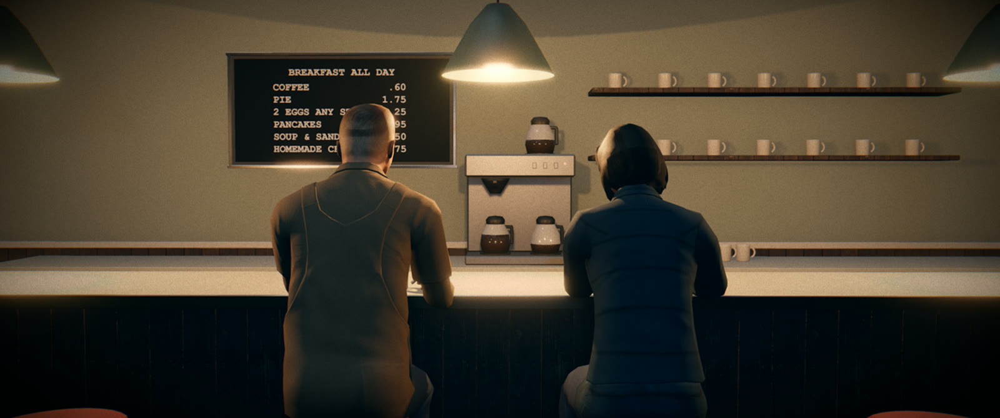
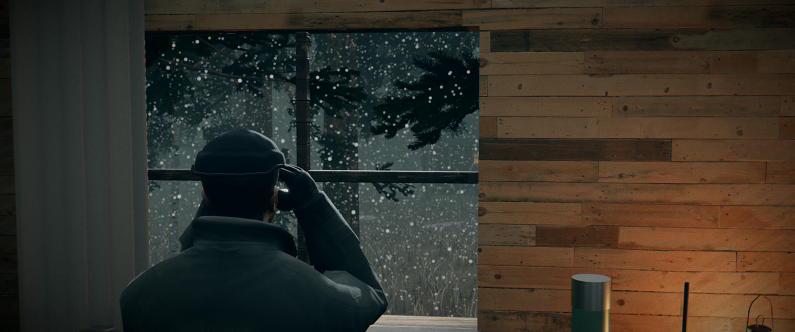
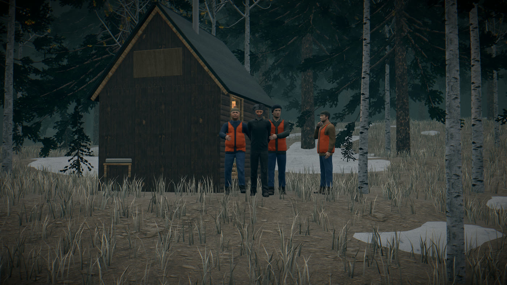
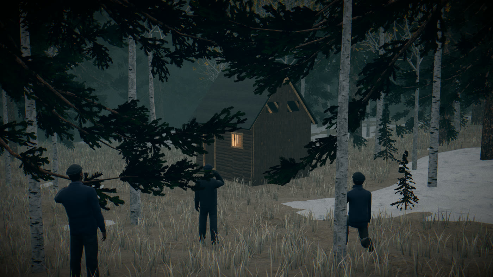
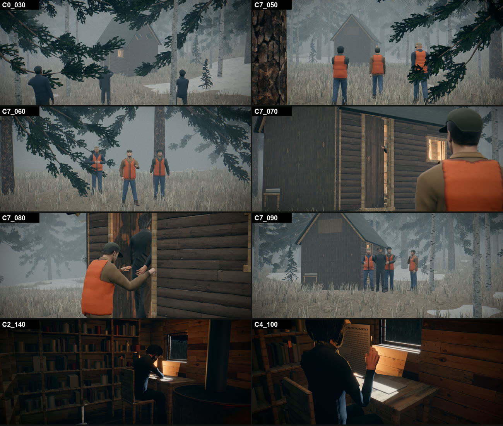
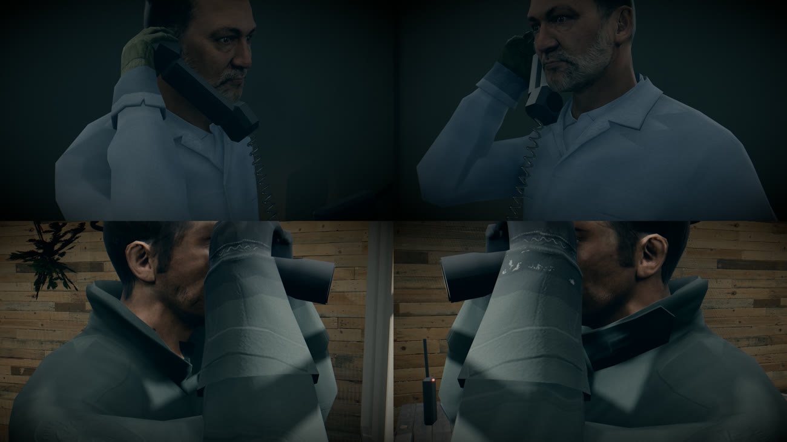
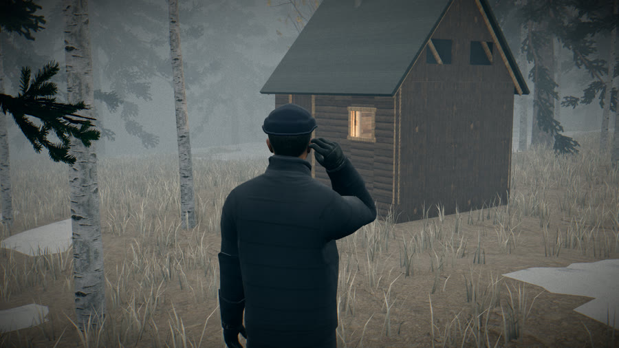

Blender · Unreal Engine · Unity · custom real-time pipelines. Models, environments, sets and textures — converted into finished, scored, graded documentary videos. Everything on this page was produced with the pipelines I wrote myself.
Hard-surface and organic modelling, procedural set building in Blender (bpy), archive-photo-accurate reconstruction, period dressing, foliage and terrain.
Blender · bpyProcedural and decal texturing (galvanised metal, worn enamel, aged gilt, paper), light budgets in physical candela, clean contact shadows, graded looks.
Texturing · lookdevScene assembly, lighting and camera work in Unreal Engine and Unity; plus a custom-built real-time render engine with a hand-tuned post chain for daily production.
Unreal · Unity · custom engineEdit, grade, score and mix to −14 LUFS in DaVinci Resolve + ffmpeg. Motion graphics, title kits, thumbnail staging — full YouTube delivery pipeline.
Resolve · ffmpegPython & JS tooling: pose studio with IK, shot generators, render farm with a job server, automated quality audits on every frame.
Python · JS toolingAI narration (voice conversion), scripted scoring, research-to-script workflows, AI helpers woven through the pipeline — always under manual art direction.
AI workflowsA 9–10 minute documentary goes from primary-source research to delivered video through six stages. Each stage is backed by a tool I built so the next episode starts faster than the last.








I kept hitting walls in off-the-shelf tools, so I wrote my own. Each one runs in daily production.
A custom-built real-time engine with a hand-built post chain — N8AO contact shadows, thin-lens depth of field, mip bloom, AgX tonemapping, SMAA, halation, film LUT — rendered supersampled and downsampled with Lanczos. A job server queues shots across the GPU and encodes with hardware H.264.
A browser tool for posing characters inside the real set, through the real shot camera: IK with finger presets, drag-to-place with ground marks, in-set props with true grips, and a safe-save UX designed so no pose is ever lost by accident.
Every still and camera move passes automated checks: hands-reach-target (reach-miss), no limb or prop penetrates geometry (ghost audit), camera rotation and zoom speeds stay inside comfort limits, and light intensities are budgeted in physical candela.
Headless Blender scripts that turn floor plans and archive photographs into dressed sets — cabin, motel, newsroom, mailbox — with procedural materials, decals and weathering, exported straight into the engine.
The same end-to-end habit applies off the render farm — design, build, deploy.
Company site for a consulting business — data-driven build step, deploy pipeline to Netlify.
finaxoassociates.netlify.appPersonal portfolio site — Next.js, designed and shipped live on Vercel.
dhilraj.vercel.app